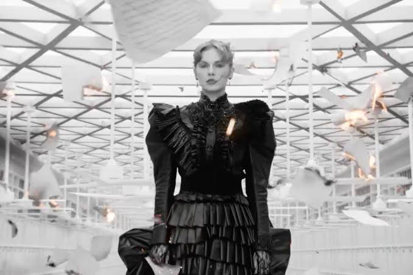
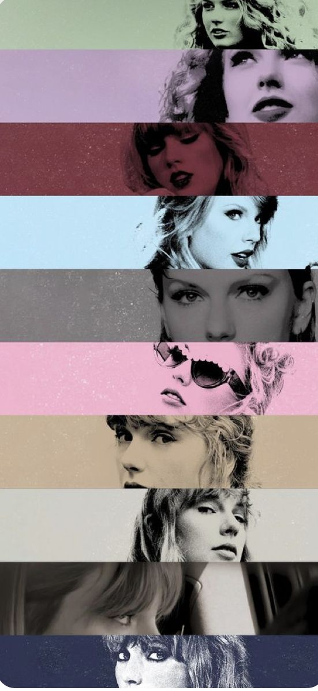

Taylor Swift
The Music Industry
Taylor Swift is a famous American singer and songwriter known for her personal storytelling songs and changing music styles. The image is from her music video Fortnight (feat. Post Malone)

Taylor Swift is a famous American singer and songwriter known for her personal storytelling songs and changing music styles. The image is from her music video Fortnight (feat. Post Malone)

Taylor Alison Swift (born December 13, 1989) is an American singer-songwriter. An influential figure in popular culture, Swift is known for her autobiographical songwriting and artistic reinventions. She is the highest-grossing live music artist, the wealthiest female musician, and one of the best-selling music artists of all time.
Swift signed with Big Machine Records in 2005 and debuted as a country singer with the albums Taylor Swift (2006) and Fearless (2008). The singles "Teardrops on My Guitar", "Love Story", and "You Belong with Me" found crossover success on country and pop radio formats. Her songs began incorporating stronger rock elements with Speak Now (2010) and electronic styles with Red (2012). She subsequently recalibrated her artistic identity from country to pop with the synth-pop album 1989 (2014), while ensuing media scrutiny inspired the trap-imbued Reputation (2017). Through the 2010s, Swift accumulated the US Billboard Hot 100 number-one singles "We Are Never Ever Getting Back Together", "Shake It Off", "Blank Space", "Bad Blood", and "Look What You Made Me Do".
Shifting to Republic Records in 2018, Swift released the eclectic pop album Lover (2019) and re-recorded four of her first six albums due to a dispute with Big Machine. She explored indie folk on the 2020 albums Folklore and Evermore, followed by mellower pop subgenres on Midnights (2022) and The Tortured Poets Department (2024), as well as soft rock on The Life of a Showgirl (2025). The singles "Cardigan", "Willow", "All Too Well (Taylor's Version)", "Anti-Hero", "Cruel Summer", "Is It Over Now?", "Fortnight", "The Fate of Ophelia", "Opalite", and "I Knew It, I Knew You" topped the Hot 100. Her Eras Tour (2023–2024) and its associated film, Taylor Swift: The Eras Tour (2023), are the highest-grossing concert tour and concert film of all time.
Swift is the only artist to have been named the IFPI Global Recording Artist of the Year six times. A record eight of her albums have each sold over a million copies first-week in the US. Publications such as Rolling Stone and Billboard have ranked Swift among the greatest artists of all time. She is the first individual from the arts to be named Time Person of the Year (2023) and the youngest female inductee into the Songwriters Hall of Fame (2026). Her accolades include 14 Grammy Awards—including a record four Album of the Year wins—and a Primetime Emmy Award. Swift is the most-awarded artist of the American Music Awards, the Billboard Music Awards, and the MTV Video Music Awards. A subject of extensive media coverage, she has a global fanbase known as Swifties.